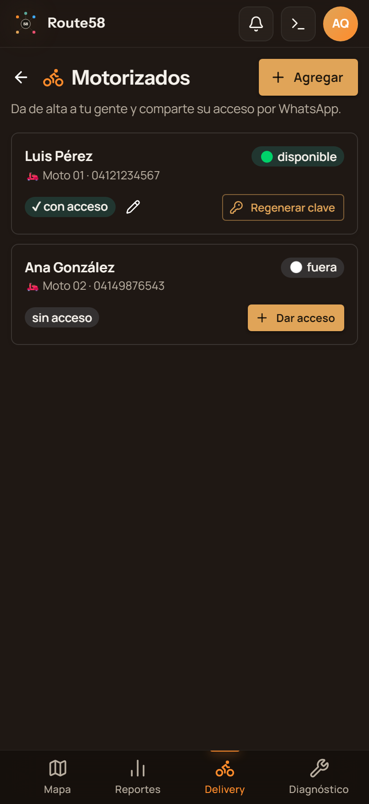
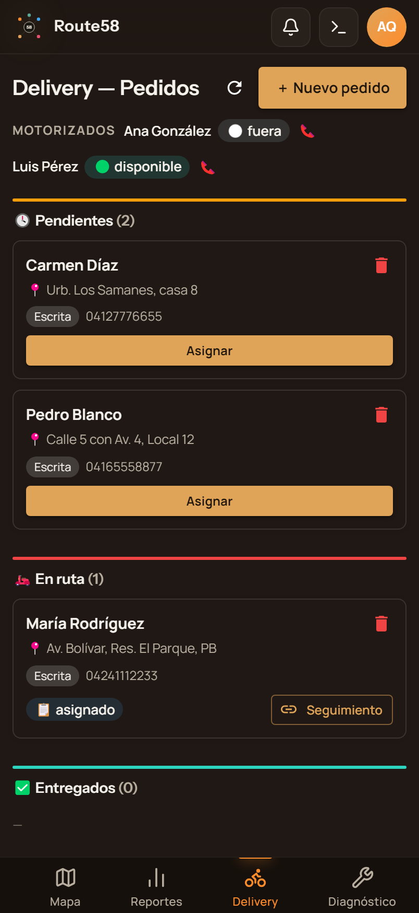
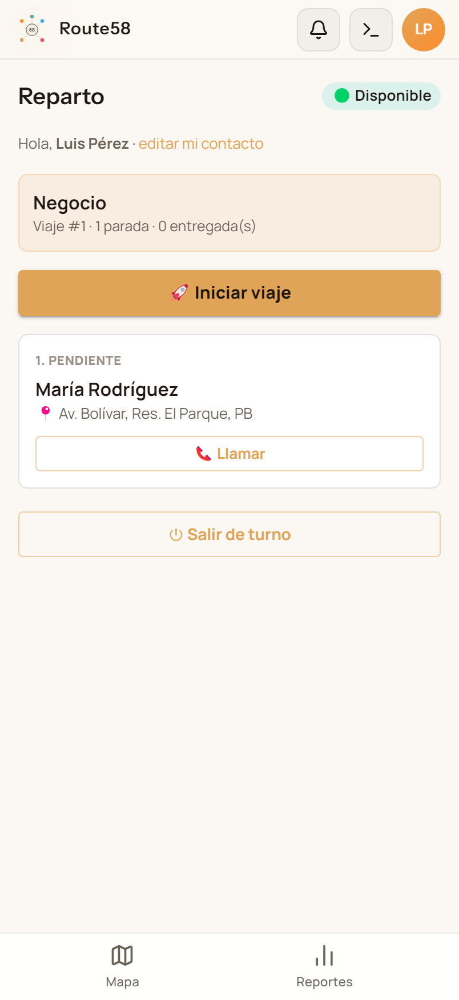
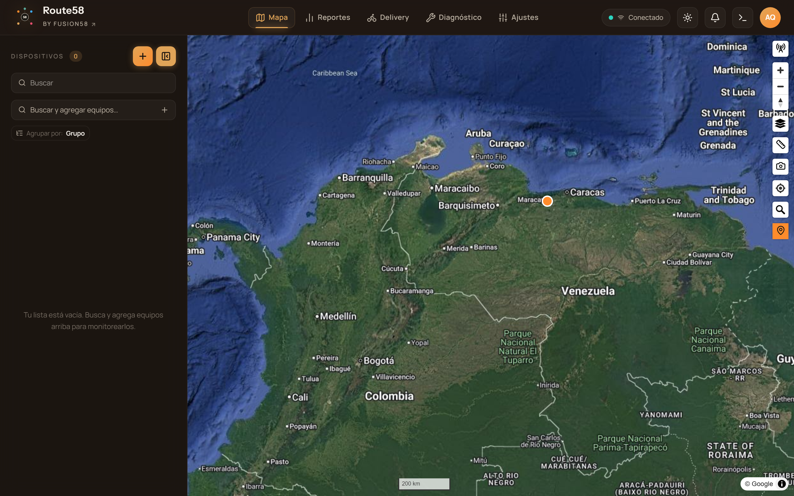

Módulo de Delivery — así va
Route58 ya rastrea el GPS del vehículo. El módulo de delivery agrega la capa de gestión de reparto: el negocio da de alta a sus motorizados y crea pedidos, el motorizado gestiona sus entregas desde el teléfono, y todo se ve sobre el mapa en vivo — sin instalar nada extra.
● Pantallas reales de la solución funcionando (entorno de pruebas)El dueño del negocio da de alta a su gente desde el teléfono: elige la moto, pone el nombre, y el sistema genera un acceso propio (limitado a ese equipo) para compartir por WhatsApp. Cero vueltas técnicas.

“Motorizados” en el hub de Delivery
Cada motorizado es un equipo GPS. Con “Agregar” el negocio crea el acceso web del motorizado, acotado solo a su moto, y comparte usuario y clave por WhatsApp con un botón.
- Autoservicio: lo hace el negocio, sin depender de soporte.
- Acceso seguro: cada motorizado ve solo su equipo.
- Estado en vivo: disponible / en ruta / fuera de turno.
- Regenerar clave y editar contacto cuando haga falta.
Las tres vistas del delivery, con el skin real de Route58 y datos de ejemplo.



La flota y los motorizados se ven en tiempo real sobre el mapa de Route58.
